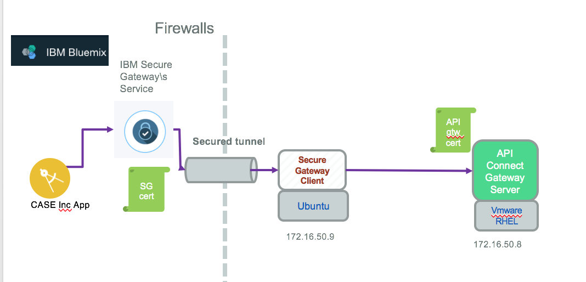
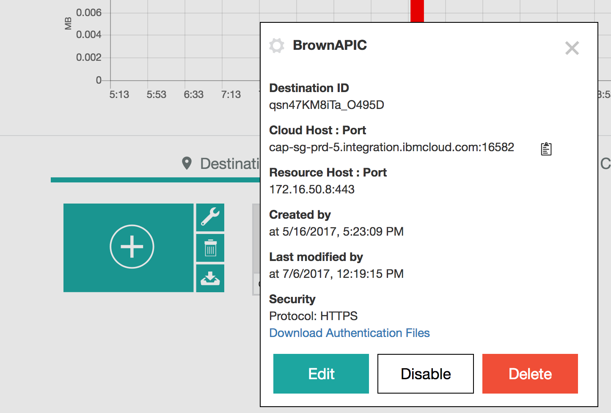

Configure TLS end to end between IBM CLoud app and back end service
The connection between bluemix app to back end data access service needs to be over HTTPS, HTTP over SSL. To make SSL working end to end we need to do certificate management, configure trust stores, understand handshaking, and other details that must be perfectly aligned to make the secure communication work.
Quick TLS summary
TLS and SSL uses public key/private key cryptography to encrypt data communication between the server and client, to allow the server to prove its identity to the client, and the client to prove its identity to the server.
Three fundamental components are involved in setting up an SSL connection between a server and client:
- a certificate,
- a public key,
- a private key.
Certificates are used to identify an identity: (CN, owner, location, state,... using the X509 distinguished name).
Entity can be a person or a computer. As part of the identity, the CN or Common Name attribute is the name used to identify the domain name of the server host.
To establish a secure connection to API Connect server, a client first resolves the domain name as specified in CN. After the SSL connection has been initiated, one of the first things the server will do is to send its digital certificate. The client will perform a number of validation steps before determining if it will continue with the connection. Most importantly, the client will compare the domain name of the server it intended to connect to (in this case, 172.16.50.8) with the common name (the “CN” field) found in the subject’s identity on the certificate. If these names do not match, it means the client does not trust the identity of the server. This is the hand shake step.
Public keys and private keys are number pairs with a special relationship. Any data encrypted with one key can be decrypted with the other. This is known as asymmetric encryption. The server’s public key is embedded within its certificate. The public key is freely distributed so anyone wishing to establish an encrypted channel with the server may encrypt their data using the server’s public key. Data encrypted with a private key may be decrypted with the corresponding public key. This property of keys is used to ensure the integrity of a digital certificate in a process called digital signing.
In term of server / certificate we need to prepare a set of things, the following schema may help to understand the dependencies:

API Gateway has its own public certificate, as IBM Secure Gateway.
- Get SSL Certificate for the API Connect Gateway end point from a Certificate Agency giving your domain name, with assured identity. The IBM self certified certificate should not work when the service consumer will do a hostname validation. For Brown Compute we are still using the self certified certificate and we will highlight the impact on the client code to bypass host validation.
- Define TLS profile configuration for API Connect using its Cloud Management console
- Get certificate for each of the components in the path
Let go over those steps in details:
pre-requisites
You need to have openssl installed on your computer. For MAC users it is already installed. If you need to install see instruction here
1. Get IBM Cloud Secure Gateway certificate
The following command returns a lot of helpful information from a server like the IBM Secure Gateway we configured on Bluemix.
openssl s_client -connect cap-sg-prd-5.integration.ibmcloud.com:16582`
- Adapt the URL with your own Secure Gateway service end point*
In the returned output, we can see the certificate chain presented by the server with the subject and issuer information:
Certificate chain 0 s:/C=US/ST=NC/L=Durham/O=IBM Corporation/OU=SWG/CN=*.integration.ibmcloud.com i:/C=US/O=DigiCert Inc/CN=DigiCert SHA2 Secure Server CA 1 s:/C=US/O=DigiCert Inc/CN=DigiCert SHA2 Secure Server CA i:/C=US/O=DigiCert Inc/OU=www.digicert.com/CN=DigiCert Global Root CA
SSL-Session:
Protocol : TLSv1
Cipher : AES256-SHA
echo | openssl s_client -connect cap-sg-prd-5.integration.ibmcloud.com:16582 -showcerts 2>&1 | sed -n '/BEGIN CERTIFICATE/,/-END CERTIFICATE-/p'> sg.pem
By default, s_client will print only the leaf certificate; as we want to print the entire chain, we use -showcerts switch.
Use this certificate for the client code in Bluemix.
As an alternate we can download the authentication files from the Secure Gateway destination:

as explained in this article and use all those certificates files to define the connection.
2. Get the APIC server certificate
When connected via VPN to your on-premise environment, you can get the TLS certificate for the API Connect Gateway server via the command:
echo | openssl s_client -connect 172.16.50.8:443 -showcerts 2>&1 | sed -n '/BEGIN CERTIFICATE/,/-END CERTIFICATE-/p'> apicgw.pem
3. Using Self certified TSL certificates in a client app
To make TSL working end to end we need to do certificate management, configure trust stores, understand handshaking, and other details that must be perfectly aligned to make the secure communication work.
We assume we downloaded the different certificates from secure gateway, the connection between the client app and the secure gateway is via TLS mutual auth.
Nodejs app
Using the request module we can use the different certificates as settings to the options argument of the connection. Here is an example of a HTTP GET over TLS:
request.get( {url:'https://cap-sg-prd-5.integration.ibmcloud.com:16582/csplab/sb/sample-inventory-api/items', timeout: 10000, headers: { 'x-ibm-client-id': '1dc939dd-xxxx', 'accept': 'application/json', 'content-type': 'application/json' } });
openssl pkcs12 -export -in "./ssl/qsn47KM8iTa_O495D_destCert.pem" -inkey "./ssl/qsn47KM8iTa_O495D_destKey.pem" -out "ssl/sg_key.p12" -name "CaseIncCliCert" -noiter -password pass:"asuperpwd"
keytool -import -alias PrimaryCA -file /ssl/DigiCertCA2.pem -storepass password -keystore /ssl/sg_trust.jks
keytool -import -alias SecondaryCA -file /ssl/DigiCertTrustedRoot.pem -storepass password -keystore /ssl/sg_trust.jks
keytool -import -alias BmxGtwServ -file /ssl/secureGatewayCert.pem -storepass password -keystore /ssl/sg_trust.jks
Step 5- Download the API Connect certificate
To access the certificate use a Web browser, like Firefox, to the target URL using HTTPS. Access the Security > Certificate from the locker icon on left side of the URL field. (Each web browser has their own way to access to the self certified certificates)
Use the export button to create a new local file with suffix .crt. From there you need to persist the file on the operating system trust store.
```
get certificate in the form of a .crt file, then mv it to ca-certificate
$ sudo mv APIConnect.crt /usr/local/share/ca-certificate
To add en try to the certificates use the command
$ sudo update-ca-certificates
verify with
$ ls -al /etc/ssl/certs | grep APIConnect $ openssl s_client -showcerts -connect 172.16.50.8:443
## Specific to Java Trust store Java Runtime Environment comes with a pre-configure set of trusted certificate authorities. The collection of trusted certificates can be found at $JAVA_HOME/jre/lib/security/cacerts The tests are run on the utility server, so the API Connect server CA certificate needs to be in place. To do so the following needs to be done: Remote connect to the API Connect Gateway Server with a Web Browser and download the certificate as .crt file
Attention these steps will make the Java program using HTTP client working only if the certificate is defined by a certified agency. The self generated certificate has a CN attribute sets to a non-hostname, and HTTP client in Java when doing SSL connection are doing a hostname verification. See the test project for the detail on how it was bypassed, in Brown compute.
References
- Open SSL web site
- SSL Cookbook